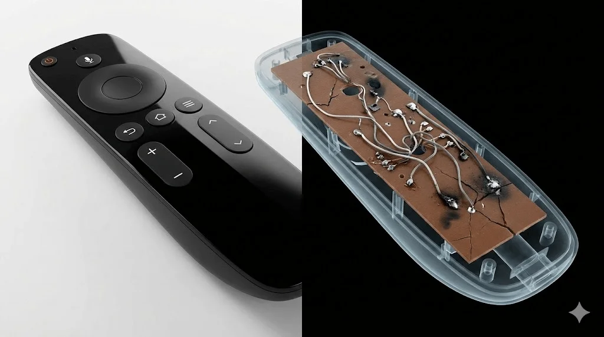
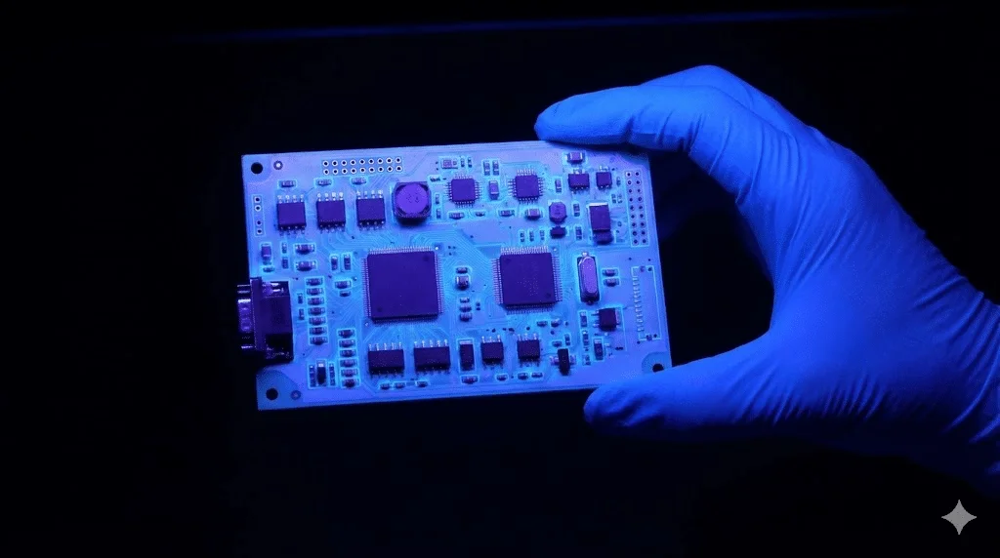

Avoid the "Public Mold" Trap: The Definitive Guide to Identifying Industrial-Grade Remote Controls
Why do identical-looking remotes perform differently? We dismantle the PCB to reveal the hidden differences in FR-4 material, soldering, and RF stability that impact your reputation.
By Eric HuangContent Marketing Director

Key Takeaways
Public mold remotes cut costs at PCB, oscillator, and QA—causing drift, desync, and early failures.
Field tests: squeeze, drop, and inspect board color/oscillator to spot paper boards and LC designs.
In the global electronics market, a dangerous paradox exists for every professional locksmith and distributor: the “Public Mold” paradox. You can find ten remote controls that look identical on the outside—same button layout, same plastic texture, same LED placement—yet their wholesale prices range from $1.50 to $5.00.
For a distributor, choosing the cheaper option is tempting. It promises higher margins. But as a source factory with 10 years of experience in RF manufacturing, Gateremotesource knows the uncomfortable truth: the casing is just a mask. When a customer calls you three months later saying their gate won’t open in the rain, or the remote has lost its programming, the plastic shell isn’t to blame. The failure lies inside the “Black Box”—the PCBA (Printed Circuit Board Assembly).
This guide dismantles the technical differences between “market junk” and industrial-grade hardware, providing verifiable data points to help you spot the difference before you place an order.
1) The Substrate: Why “Paper” Belongs in Books, Not Remotes
The cheap option: Phenolic paper board (94HB/94V0). Low-end manufacturers use what is colloquially known as “Yellow Board,” composed of paper impregnated with phenolic resin.
The physics of failure: Paper is hygroscopic. In humid environments (a Florida summer or a British winter), the board swells microscopically. This swelling stresses the copper traces and solder joints, leading to intermittent micro-fractures.
Gateremotesource Lab Note – The Van Test: If an installer leaves these remotes in a service van at 60°C+, the thermal expansion mismatch between the paper board and the components warps the circuit. Failure rate in this scenario exceeds 15%.
The Gateremotesource standard: FR-4 glass fiber. We exclusively use FR-4 epoxy glass fiber boards (woven fiberglass + epoxy). It maintains structural integrity from -40°C to 100°C.
Need FR-4 + AOI-verified remotes?
Get a teardown sample kit showing FR-4 boards, crystal references, and AOI reports before you commit volume.
Ever encountered a remote that works from 50 meters one day but fails at 10 meters the next? This “Ghost Range” issue is usually caused by the frequency reference component.
The cost-down method: LC/RC oscillation. To save about $0.15 per unit, cheap workshops remove the crystal oscillator and rely on LC or RC circuits. These are highly sensitive to temperature drift. A standard 433.92MHz remote using LC oscillation can drift to 433.50MHz on a cold morning.
The industrial method: Quartz crystal / SAW resonator. We use industrial-grade quartz crystal oscillators or SAW resonators, with a strict frequency tolerance of ±10ppm to ±75kHz. Even if battery voltage drops or temperature swings, transmission stays locked.
3) The “Hand Effect” and Antenna Design
The human body is a large bag of conductive salt water. When a user grips a poorly designed remote, their hand detunes the antenna.
Cheap layouts: Generic “copy-paste” antenna traces often run too close to the battery or ground plane. When held tightly, transmission power can drop by 30–50%.
Gateremotesource engineering: We design a dedicated antenna clearance zone, match impedance to 50 ohms, and use large GND planes to shield the oscillator—keeping transmission consistent whether pinched or full-grip.
4) The Chipset: Rolling Code Integrity
For locksmiths, the nightmare isn’t just hardware failure—it’s data loss. Many cheap remotes claim rolling code (e.g., HCS301 compatibility) but use unstable clone chips to avoid licensing fees.
The problem: Clone chips often have poor sync logic. After enough presses out of range, the remote and receiver lose sync.
Our approach: We prioritize genuine protocol compatibility and robust sync algorithms. Our firmware keeps the hopping-code window wide enough to prevent de-synchronization during normal use.
5) Manufacturing: The Invisible 10%
Design is half the battle; manufacturing consistency is the other half.
AOI (Automated Optical Inspection): Every board passes AOI. High-res cameras reject tombstoned resistors or dry joints instantly. Defect rate stays under 0.1%.
Conformal coating (three-proof paint): For high-end export orders, we apply a transparent insulating layer over the PCB. It protects against humidity, salt spray, and even sweat if the casing cracks.
6) Technical Comparison: Cheap vs. Industrial Grade
Feature
Cheap “Public Mold”
Gateremotesource Industrial
PCB Material
Phenolic Paper
FR-4 Glass Fiber
Temp Range
-10°C to 50°C
-40°C to 100°C
Frequency Source
LC/RC (drift)
Crystal / SAW (±75kHz)
Button Life
~15,000 (Iron)
>100,000 (Steel+Silver)
Inspection
Manual sampling
100% AOI
Defect Rate
~3–5%
<0.1%
Coating
None
Conformal (optional)
7) How to Field-Test a Remote (For Locksmiths)
The Squeeze Test: Squeeze the case near the buttons. If it activates without a press, the PCB is flexing (likely paper board).
The Drop Test: Drop from 1.5 meters onto a hard floor three times. If the battery clip flies off or frequency shifts, soldering is weak.
The Board Inspection: Open it up. Green/Blue board? Likely FR-4 (good). Yellow/Brown board? Likely paper (bad). Silver metal can? Crystal oscillator (good). No metal can? LC/RC oscillation (drift risk).

Conclusion
Manufacturing is not just about assembly; it’s about delivering certainty. A remote control is the only interface between your customer and their security system. If it feels cheap or fails, they don’t blame the factory in China—they blame you. We leverage our 10 years of manufacturing heritage to ensure what’s inside the shell is built to last.
Ready to upgrade your supply chain?
Get a teardown sample kit and wholesale pricing tailored to your SKUs.
Q: Why does frequency drift happen in cold weather? A: Cheap remotes use LC/RC circuits without temperature compensation. We use crystal oscillators that remain stable in freezing conditions.
Q: Can I tell if a remote is high quality without opening it? A: Not always, but the Squeeze Test is a good indicator. If the casing flexes and triggers the button, the internal PCB is likely a low-quality paper board.
Q: What is rolling code de-synchronization? A: It occurs when the remote’s counter gets too far ahead of the receiver. Our industrial chips use a wider window to prevent this common lockout issue.